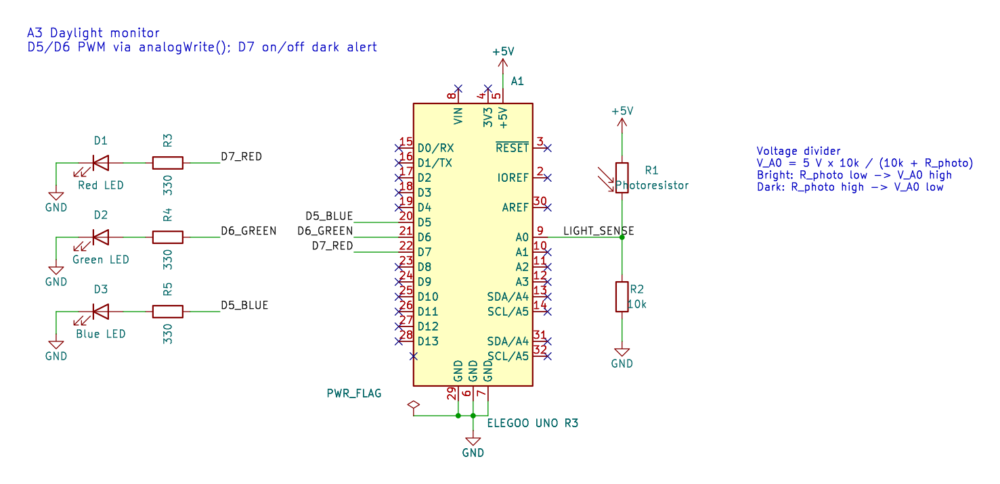
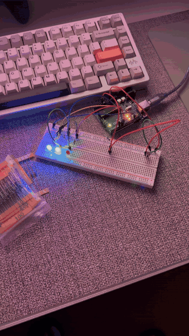
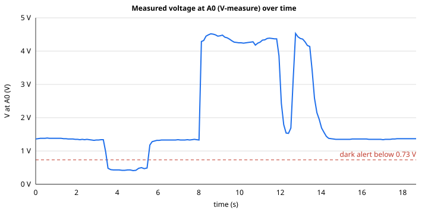

The prompt for this assignment was a smart home prototype that senses something around the home, and the thing I wanted to see was how much daylight a room is actually getting, since that is the signal I end up ignoring until I notice I have been working in the dark. The Daylight Monitor reads a photoresistor and turns that reading into three LEDs. Green gets brighter as the room gets brighter, blue gets brighter as the room gets darker, like a night light taking over, and red turns on when the room is dim enough that the lights should probably be on. Everything came from the ELEGOO starter kit, and I drew the schematic in KiCad this time instead of by hand.
Schematic

The sensor half of the circuit is a voltage divider. The photoresistor runs from 5 V to a shared node, a 10 kΩ resistor runs from that node to ground, and A0 reads the voltage at the node. A photoresistor's resistance drops as more light hits it, so with the photoresistor on top, more light means a higher voltage at A0:
VA0 = 5 V × R2 / (R1 + R2) = 5 V × 10 kΩ / (Rphoto + 10 kΩ)
The output half is the same LED arrangement I used before, rebuilt from scratch. Green is on D6 and blue is on D5, which are both PWM pins, so analogWrite() can fade them. Red is on D7, which is not a PWM pin, so it is only ever fully on or off as the alert.
Choosing the fixed resistor. The fixed resistor decides where the divider's output lands, and the value that gives the widest voltage swing between a bright reading and a dark reading is the geometric mean of the photoresistor's resistance at those two extremes:
R2 = √(Rbright × Rdark)
Before building anything, I estimated the photoresistor would sit around 1 kΩ under a bright light and around 100 kΩ when covered, which gives √(1 kΩ × 100 kΩ) = 10 kΩ, a value the kit has. Once the circuit was running, I worked backward from the voltages in my serial log to the photoresistor's actual resistance using Rphoto = 10 kΩ × (5 − V) / V:
| Condition | analogRead | V at A0 | Rphoto (calculated) |
|---|---|---|---|
| Bright light on the sensor | 855 to 927 | 4.18 to 4.52 V | about 1.1 to 2.0 kΩ |
| My dim room | 271 to 284 | 1.32 to 1.39 V | about 26 to 28 kΩ |
| Finger over the sensor | 83 to 103 | 0.41 to 0.50 V | about 89 to 113 kΩ |
With the brightest and darkest of those, √(1.1 kΩ × 113 kΩ) ≈ 10.8 kΩ, so 10 kΩ turned out to be close to ideal for my room, not just a convenient guess. These resistances are calculated from the readings, not measured with a meter.
LED resistors. I kept each LED under about 10 mA, which leaves a comfortable margin below the UNO's 20 mA rating per pin. Assuming typical forward voltages of 2.0 V for red, 2.2 V for green, and 3.2 V for blue (typical figures, not measured), red is the worst case at (5 V − 2.0 V) / 0.010 A = 300 Ω, and the next kit value up is 330 Ω:
| LED | Pin | Assumed Vf | Current with 330 Ω |
|---|---|---|---|
| Red | D7 | 2.0 V | (5 − 2.0) / 330 = 9.1 mA |
| Green | D6 (PWM) | 2.2 V | (5 − 2.2) / 330 = 8.5 mA |
| Blue | D5 (PWM) | 3.2 V | (5 − 3.2) / 330 = 5.5 mA |
Circuit

Firmware
The code reads A0, maps that reading onto the two PWM LEDs, and uses an if statement for the red alert. Every line with content has a comment above it.
// A0 reads the voltage between the photoresistor (to 5V) and the 10k resistor (to GND)
const int SENSOR_PIN = A0;
// Red LED on D7 is the on/off "too dark" alert (D7 is not a PWM pin)
const int RED_PIN = 7;
// Green LED on D6 (PWM) glows brighter as the room gets brighter
const int GREEN_PIN = 6;
// Blue LED on D5 (PWM) glows brighter as the room gets darker
const int BLUE_PIN = 5;
// Measured with a finger over the sensor: about 122 counts = 0.60 V, so R_photo is about 74k
const int DARK_READING = 120;
// Measured under a phone flashlight: about 1000 counts = 4.89 V, so R_photo is about 230 ohms
const int BRIGHT_READING = 1000;
// Alert below 150 counts = 0.73 V (R_photo about 58k): between covered (~122) and hand shadows (~175)
const int DARK_ALERT_READING = 150;
// Runs once at power-up or reset
void setup() {
// Open the serial port at 9600 baud so the Serial Monitor can log readings
Serial.begin(9600);
// Make the red alert pin an output
pinMode(RED_PIN, OUTPUT);
// Make the green PWM pin an output
pinMode(GREEN_PIN, OUTPUT);
// Make the blue PWM pin an output
pinMode(BLUE_PIN, OUTPUT);
}
// Runs over and over after setup()
void loop() {
// Read the divider voltage as a 10-bit number: 0 = 0 V, 1023 = 5 V
int lightReading = analogRead(SENSOR_PIN);
// Convert the reading back to volts for the serial log and the voltage graph
float senseVolts = lightReading * 5.0 / 1023.0;
// Clamp to the calibrated range so map() never returns a value outside 0-255
int clamped = constrain(lightReading, DARK_READING, BRIGHT_READING);
// Scale the 10-bit light range onto the 8-bit PWM range: dark = 0, bright = 255
int daylight = map(clamped, DARK_READING, BRIGHT_READING, 0, 255);
// Scale the same range in reverse for the night light: dark = 255, bright = 0
int nightlight = map(clamped, DARK_READING, BRIGHT_READING, 255, 0);
// Set the green LED's PWM duty cycle from the daylight level
analogWrite(GREEN_PIN, daylight);
// Set the blue LED's PWM duty cycle from the night-light level
analogWrite(BLUE_PIN, nightlight);
// Check whether the room is dimmer than the alert threshold
bool tooDark = lightReading < DARK_ALERT_READING;
// If it is too dark, warn that the home's lights should be on
if (tooDark) {
// Turn the red alert LED on
digitalWrite(RED_PIN, HIGH);
} else {
// Otherwise keep the red alert LED off
digitalWrite(RED_PIN, LOW);
}
// Start the log line with the time since reset, for graphing voltage over time
Serial.print("t_ms=");
// Print the milliseconds since reset
Serial.print(millis());
// Label the raw ADC value
Serial.print(" | A0=");
// Print the raw 0-1023 reading
Serial.print(lightReading);
// Label the voltage
Serial.print(" | V=");
// Print the divider voltage with two decimal places
Serial.print(senseVolts, 2);
// Label the green and blue PWM levels
Serial.print(" V | daylight PWM=");
// Print the green PWM value
Serial.print(daylight);
// Separate the blue value
Serial.print(" night PWM=");
// Print the blue PWM value
Serial.print(nightlight);
// End the line with the alert state in words
Serial.println(tooDark ? " | ALERT: room too dark, turn lights on" : " | room light OK");
// Wait 100 ms so the log has 10 samples per second
delay(100);
}Why these values. Each constant corresponds to a voltage at A0, and I set them from my own serial readings rather than from the estimates I started with. DARK_READING = 120 is roughly where a finger over the sensor put A0 (about 0.6 V) during calibration, and BRIGHT_READING = 1000 is roughly a phone flashlight held right on it (about 4.9 V). map() stretches that range of the 10-bit reading, which runs from 0 to 1023, onto the 8-bit range analogWrite() accepts, which runs from 0 to 255, so the darkest reading gives green 0 and blue 255, and the brightest gives the reverse. constrain() comes first so that a reading outside the calibrated range, like the 83 I got with a tighter cover in the logged run, cannot push map() below 0 or above 255. DARK_ALERT_READING = 150 is about 0.73 V. I placed it between a covered sensor (around 120) and a hand passing over it (around 175 in my first test), so the red alert only turns on when the sensor is actually dark and not every time a shadow crosses it. In my room, A0 sits around 275, which gives green about 44 and blue about 211, so the room honestly reads as mostly night light.
Serial output. Each line logs the time, the raw reading, the voltage, both PWM levels, and the alert state:
t_ms=908 | A0=283 | V=1.38 V | daylight PWM=47 night PWM=208 | room light OK
t_ms=4779 | A0=83 | V=0.41 V | daylight PWM=0 night PWM=255 | ALERT: room too dark, turn lights on
t_ms=8587 | A0=925 | V=4.52 V | daylight PWM=233 night PWM=22 | room light OK
The full serial log has 160 lines over about 19 seconds.
Operation

The clip starts in my dim room, with blue mostly on and green faint. When my hand covers the photoresistor, green goes out, blue goes to full, and the red alert turns on, then everything returns once my hand moves away. In the second half, with more light on the sensor, green takes over and blue fades down.
Question 1: can the variable resistor be R1 or R2?
It can be either one, and the position only decides which direction the voltage moves. Using the resistances from my circuit, about 1.4 kΩ in bright light, 27 kΩ in my room, and 108 kΩ covered, with the 10 kΩ fixed resistor:
| Photoresistor position | Formula | Bright | Room | Covered |
|---|---|---|---|---|
| R1, on top (my circuit) | 5 × 10k / (Rphoto + 10k) | 4.40 V | 1.34 V | 0.43 V |
| R2, on the bottom | 5 × Rphoto / (Rphoto + 10k) | 0.60 V | 3.66 V | 4.57 V |
Both arrangements swing by the same 3.97 V between bright and covered, which makes sense, because the two voltages always add up to 5 V. With the photoresistor on top, more light means a higher reading, and on the bottom, more light means a lower one. Swapping them would still work, but I would have to reverse the output ranges in map() and change the alert check from < to >. What does not work is leaving out the fixed resistor entirely, because then there is no divider, and A0 would sit at 5 V no matter how much light there is.
Question 2: voltage at A0 over time

This graph comes from real readings rather than a prediction, since the sketch prints the voltage at A0 about nine times a second. I restarted the Serial Monitor after filming, so the log is from a second run of the same sequence rather than the exact clip above. The room sits around 1.35 V, covering the sensor drops it to about 0.4 V, which crosses the alert line, and bright light pushes it up to about 4.3 to 4.5 V. The short drop around 12 seconds is a moment when less light reached the sensor before it came back.
Question 3: 10-bit PWM and a 16-bit ADC
With a 16-bit ADC, analogRead() would return 0 to 65535 instead of 0 to 1023, and with 10-bit PWM, analogWrite() would accept 0 to 1023 instead of 0 to 255, so both ends of the map() call change. The output range becomes 0 to 1023:
int daylight = map(clamped, DARK_READING, BRIGHT_READING, 0, 1023);The input range changes too, but only because the constants are measured in ADC counts. The same voltage now produces 216 / 210 = 64 times as many counts, so every calibration value gets multiplied by 64, DARK_READING from 120 to 7680, BRIGHT_READING from 1000 to 64000, and DARK_ALERT_READING from 150 to 9600. The voltage conversion becomes reading * 5.0 / 65535.0. One practical catch on the UNO is that an int only holds values up to 32767, so the readings and constants would need to be long or unsigned int. map() itself already uses long math internally. Nothing about the circuit changes, since the divider produces the same voltages, and the only difference is resolution, each ADC step becoming about 76 µV instead of 4.9 mV, and the LEDs getting 1024 brightness steps instead of 256.